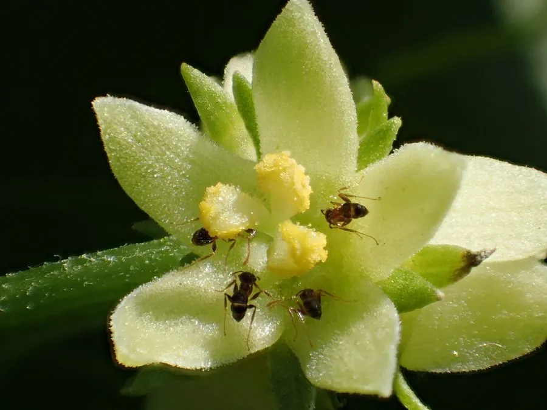

农作物与经济植物 · 植物界
佛手瓜 Sechium edule

佛手瓜的果实形似合十的佛手，嫩果可炒食，块根和嫩梢也可食用，产量高、管理粗放，是南方常见瓜类。
- 分类
- 门被子植物门纲双子叶植物纲目葫芦目科葫芦科属佛手瓜属
- 栖息环境
- 温暖湿润的山地菜园，喜半阴、疏松排水良好土壤
- 地理分布
- 原产墨西哥与中美洲，现中国南方、东南亚等地广泛栽培
- 保护级别
- 暂无评估（栽培作物）
物种志
佛手瓜是葫芦科多年生攀援草本，茎蔓生、有卷须，可攀爬 10 m 以上。叶片掌状分裂，表面粗糙。花小，黄绿色，单性同株。果实为瓠果，梨形或倒卵形，表面有纵沟，黄色或绿色，果肉白色、脆嫩，内含一枚大种子，种子与果肉紧密相连。
佛手瓜原产墨西哥与中美洲，19 世纪传入中国，如今在南方丘陵地区广泛栽培。它喜温暖湿润、半阴环境，不耐寒，也怕强光，适宜在疏松肥沃、排水良好的土壤中种植，多搭架栽培，根系可形成块根。嫩果可炒食、凉拌、做汤，口感清脆；嫩梢（龙须菜）是南方常见蔬菜，块根也含淀粉可食。佛手瓜产量高、病虫害少，是管理粗放的优良瓜类作物，但要注意其藤蔓生长旺盛，需控制空间。
形态与习性
- 果实梨形，表面有纵沟
- 花小，黄绿色，单性同株
- 繁殖多用整果播种
- 用途嫩果炒食，嫩梢作蔬菜
- 特性产量高、病虫害少
趣味知识
- 佛手瓜的果实形似合十的佛手，名字由此而来。
- 佛手瓜的嫩梢叫“龙须菜”，是南方常见的蔬菜。
- 佛手瓜多用整果播种，一个瓜就是种子和它的营养仓。